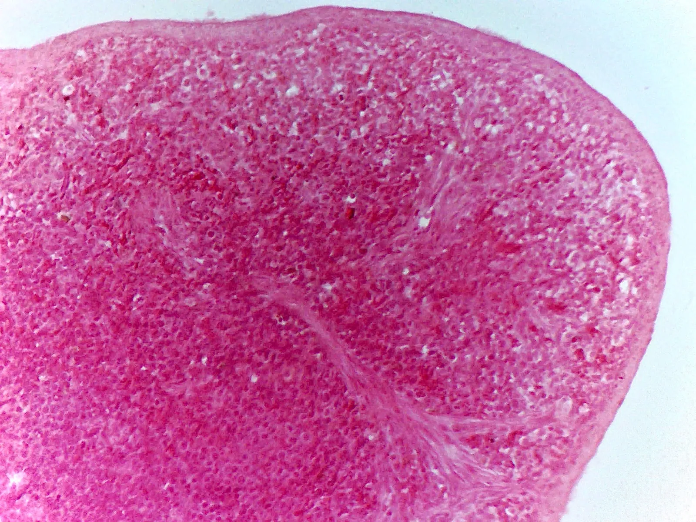
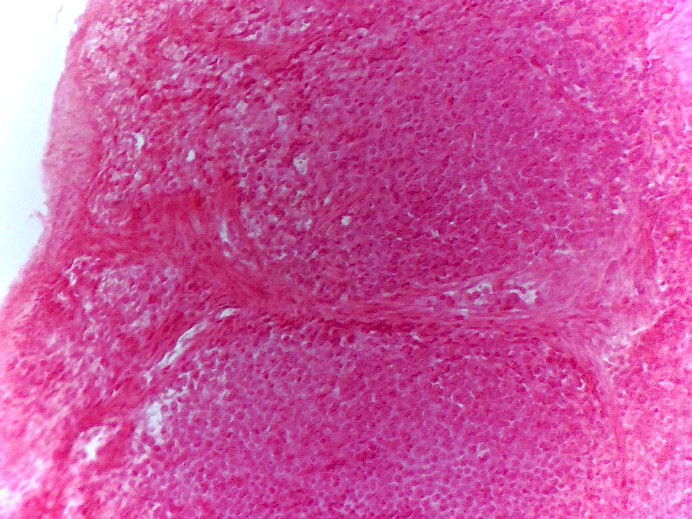
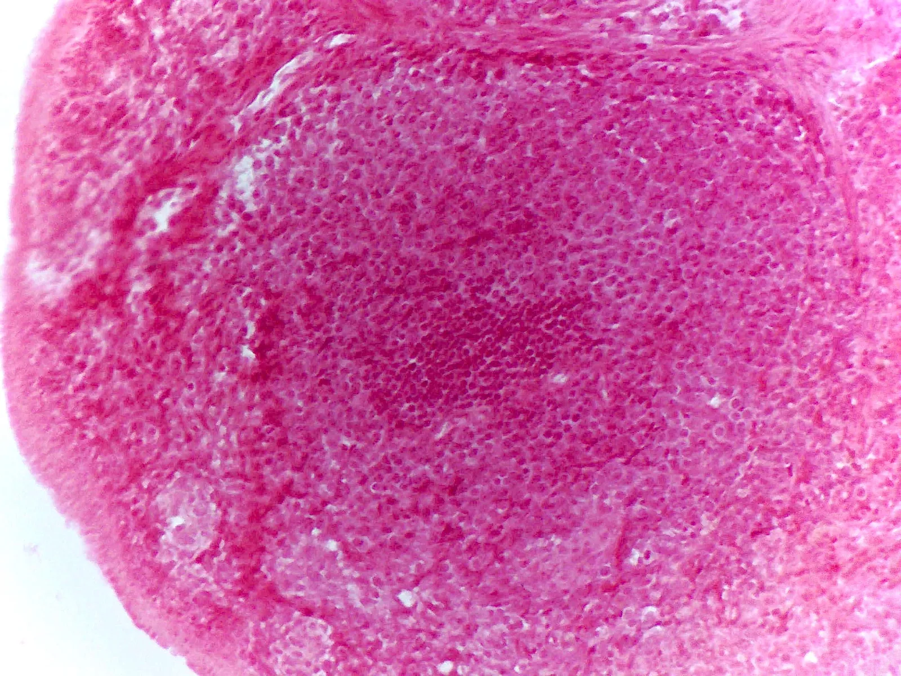
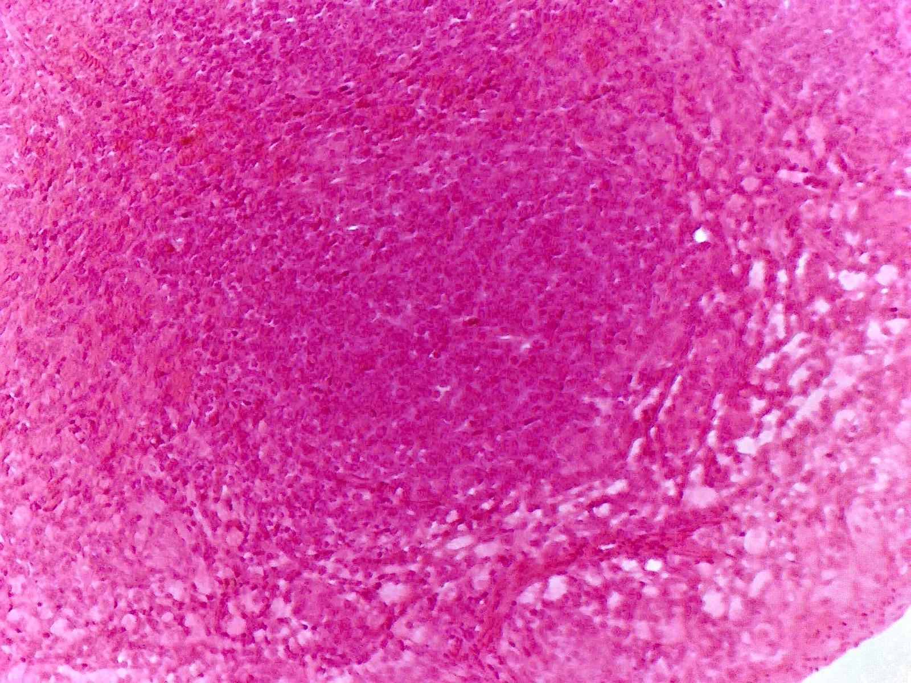

Lâmina 56 · Sangue e órgãos linfoides
Baço




Toque na imagem para ampliar. No computador, use as setas do teclado para trocar de imagem.
Lâmina 56 · Sangue e órgãos linfoides




Toque na imagem para ampliar. No computador, use as setas do teclado para trocar de imagem.